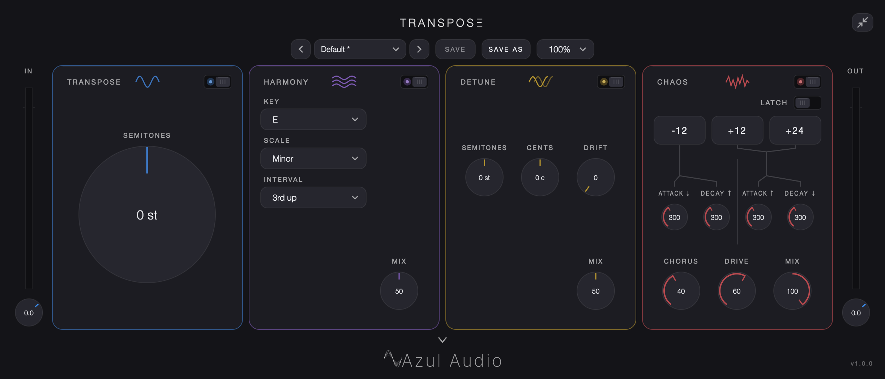
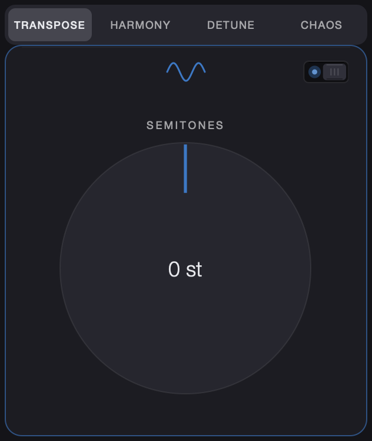
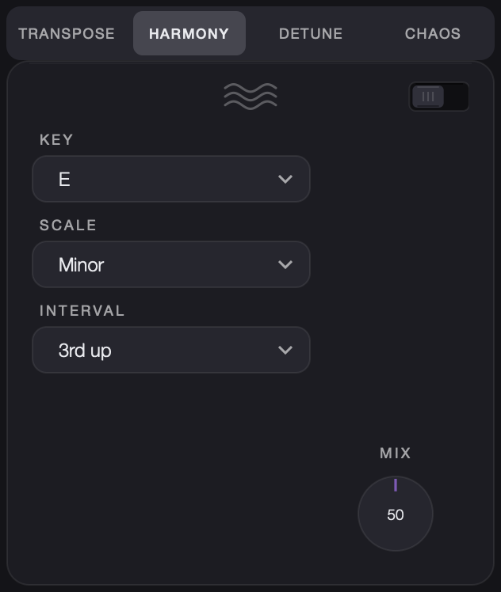
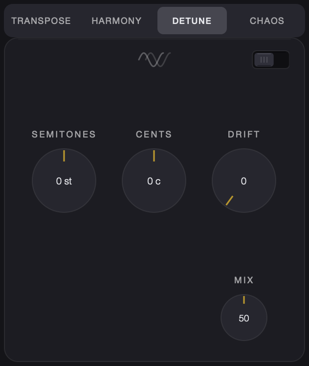
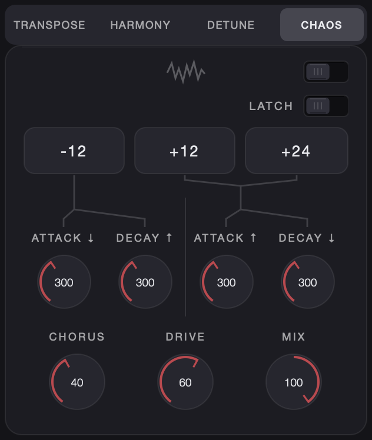

Transpose
Real-time guitar pitch shifting with near-zero attack latency. Four effects in one plugin: whole-guitar transpose, scale-aware harmony, detune, and a momentary chaos sweep.
- FormatsAU, VST3
- macOS11.0+, Apple silicon & Intel
- WindowsVST3
- ActivationSign in with your Azul Audio account
- DeliveryInstant download from your account
Four effects, one plugin

Transpose
Shift the whole guitar from −12 to +12 semitones.

Harmony
A scale-aware second voice: pick key, scale, interval and mix.

Detune
A fractionally shifted copy with drift, blended to taste.

Chaos
A momentary distorted pitch sweep (−12 / +12 / +24) with drive and chorus.
Built for playing live
Pick attacks pass through in 1–3 ms, so fast playing stays tight. Place Transpose first in your chain, before any amp sim.
Also included: input and output trims with peak/RMS meters, a tuner for the input and the transposed output, factory and user presets, and a resizable window (75–200%).
How you get it
- Buy Transpose and create your Azul Audio account at checkout.
- Download the Mac or Windows installer from your account.
- Open Transpose in your DAW and sign in to activate.